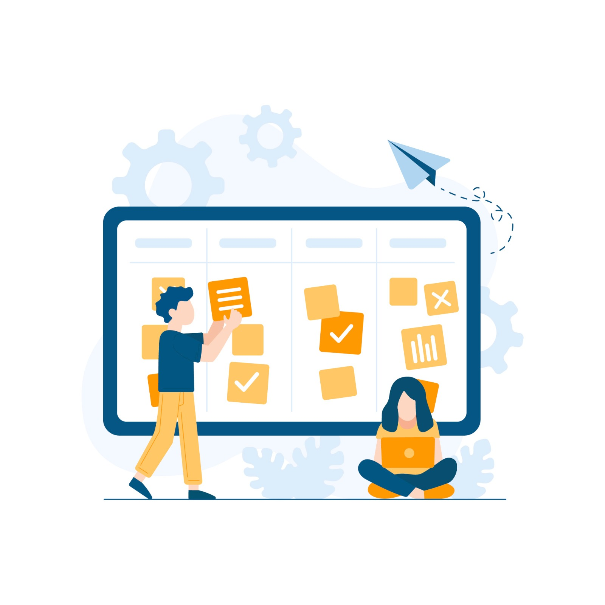
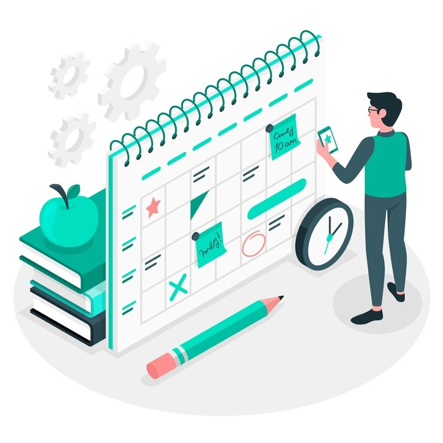

<div class="home-container">
    <div class="content">
      <h1>Manage Your Tasks</h1>
      <p>
        Encan boards, lists, and cards enable you to organize and prioritize your projects in a fun,
        flexible, and rewarding way.<br> Let's get started 😊
      </p>
      <div class="images-container">
        <div class="image-card1">
          
          <button   class="task-button" routerLink="/tasks" routerLinkActive="active">Go to Tasks</button>
        </div>
        <div class="image-card2">
          
          <button class="project-button" routerLink="/project-details" routerLinkActive="active">Go to Projects</button>
        </div>
      </div>
    </div>
  </div>